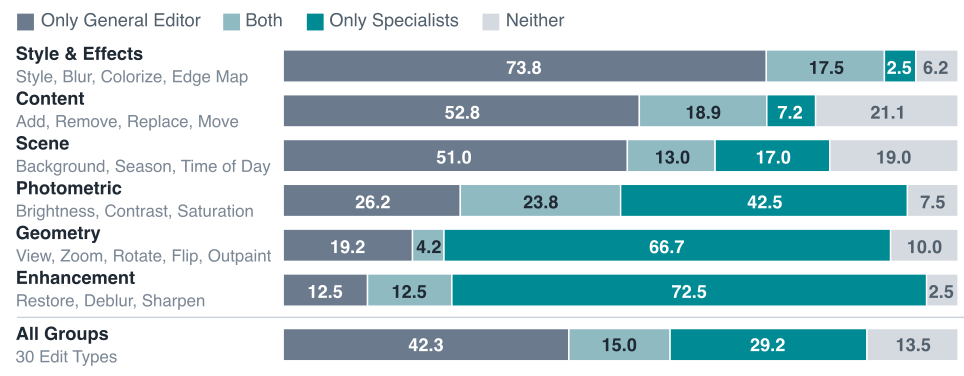
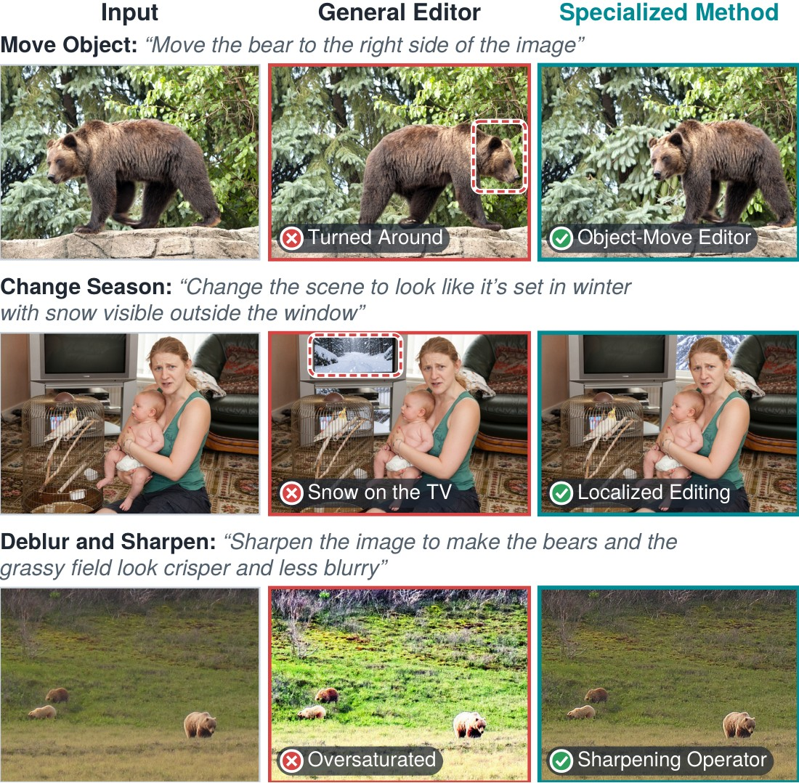
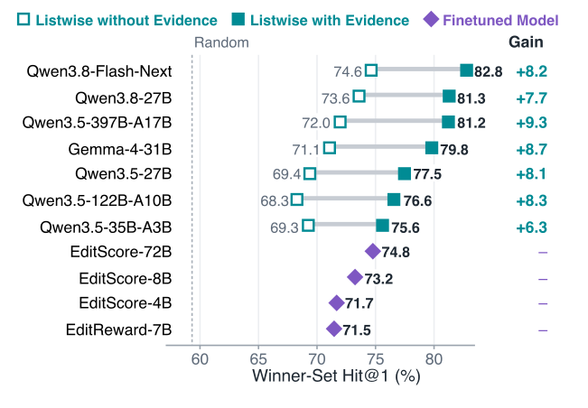

An editing agent is bounded by its action space and its observation space.
EditAgent expands both.
Measured on 600 requests · 30 edit types · 5 professional retouchers
01 · Action spaceWhat the agent can do
-
1What others do, and why
One editor, tried again and again
One general editor per step. Rejected? Edit the last result again.
Why: one editor can do almost anything, and step-by-step refinement works in image generation.
-
2What we found
One editor is not enough

Who makes a usable edit, by edit group (% of expert-labeled sets) 
Only a specialist gets these right. -
3Our fix
Race many methods at once, all from the source
- General editor
- Masked local editing
- Object removal
- Object movement
- Subject scaling
- Photometric operators
- Style transfer
- Flips & rotations
- Zoom-in crop
- Canvas extension
- Exact by construction — flips, 90° rotations, pixels outside a mask
- Every try starts from the source — no drift
- One judge call for the whole batch
-
4The proof
Parallel beats sequential — more methods beat more samples
Parallel vs. sequential · same editor
ParallelTieSequential
78.5% of decided expert comparisons favor parallel — with at most half the judge calls.
More samples vs. more methods · EdiVal-O
Turn 3 · Qwen-Image-Edit-2511
02 · Observation spaceWhat the judge can see
-
1What others do, and why
One output at a time, judged by eye
One edit at a time: pass or fail by eye — or a reward-model score.
Why: it fits any pipeline, and reward models like EditScore learn from large sets of human preferences.
-
2What we found
No judge is reliable across edit types
The best judge changes with the edit type — some fall below random.
![Accuracy (Winner-Set Hit@1, %) of picking a usable edit, one output at a time, by edit group, for EditScore-72B / EditReward-7B / CLIP-I / Qwen3.8-27B, with random in brackets: style and effects 82.3 / 77.3 / 58.7 / 84.4 (71.8); content 79.6 / 78.9 / 76.8 / 81.7 (69.5); scene 74.8 / 69.1 / 67.9 / 67.5 (58.3); photometric 75.3 / 63.9 / 80.6 / 54.2 (49.0); geometry 63.2 / 60.4 / 49.1 / 66.4 (50.0); enhancement 73.1 / 82.1 / 84.6 / 65.0 (44.7); all groups 74.8 / 71.5 / 68.2 / 71.6 (59.3). Cells are colored by rank within each group, best to worst.](figures/fig2b-judges.svg)
Picking a usable edit, one output at a time · Winner-Set Hit@1 (%) -
3Our fix
Show every candidate, with evidence, in one call
- Change map
- Before | after close-up
- Tone & color stats
- Geometry checks
- Facts checked by code
- Side by side — see what each one changed
- Measured — the subtle becomes visible
- History check — earlier turns are re-checked after each turn
Compare · the only clean removal wins
Measure tone · which edit brightened gently
Measure framing · which zoom-out kept the original
-
4The proof
Off-the-shelf judges now beat finetuned ones
Qwen3.8-27B judge · accuracy (%)
Finetuned EditScore-72B: 74.8
Every judge we tried · with vs. without evidence

03EditAgent: Both Spaces, One Loop
Plan the steps, race methods in parallel, compare with evidence in one call. Each accepted image is the next step’s source.
04Results
Two open-weight backbones · one off-the-shelf VLM (Qwen3.8-27B) in every agent role
Strong backbones get much stronger
EdiVal-O at turn 3
| EdiVal-IF | EdiVal-CC | EdiVal-O | |||||||
|---|---|---|---|---|---|---|---|---|---|
| Model | T1 | T2 | T3 | T1 | T2 | T3 | T1 | T2 | T3 |
| Closed-source | |||||||||
| FLUX.1-Kontext-max† | 69.49 | 46.89 | 31.83 | 93.93 | 90.90 | 88.40 | 80.79 | 65.29 | 53.04 |
| GPT-Image-1† | 73.12 | 54.89 | 38.35 | 81.00 | 77.78 | 75.50 | 76.96 | 65.34 | 53.81 |
| Nano Banana† | 70.70 | 50.66 | 35.35 | 93.91 | 90.48 | 89.48 | 81.48 | 67.70 | 56.24 |
| FLUX.2-max | 75.55 | 55.27 | 39.36 | 92.91 | 88.30 | 85.78 | 83.78 | 69.86 | 58.10 |
| Nano Banana 2† | 73.89 | 54.17 | 38.61 | 93.54 | 90.52 | 88.61 | 83.14 | 70.02 | 58.49 |
| GPT-Image-1.5† | 75.19 | 55.92 | 40.08 | 94.49 | 91.20 | 88.49 | 84.29 | 71.41 | 59.55 |
| Seedream 4.0† | 75.93 | 55.58 | 41.59 | 92.51 | 88.03 | 85.86 | 83.81 | 69.95 | 59.76 |
| Open-source | |||||||||
| AnyEdit | 41.07 | 16.32 | 7.22 | 86.42 | 78.91 | 70.10 | 59.58 | 35.89 | 22.50 |
| UltraEdit | 51.37 | 17.70 | 6.36 | 86.80 | 84.50 | 82.40 | 66.78 | 38.67 | 22.89 |
| OmniGen | 54.72 | 24.48 | 10.66 | 93.00 | 88.42 | 83.92 | 71.34 | 46.52 | 29.91 |
| FLUX.1-Kontext-dev† | 59.97 | 32.69 | 16.61 | 95.32 | 92.24 | 90.22 | 75.61 | 54.91 | 38.71 |
| Step1X-Edit | 61.89 | 34.97 | 17.83 | 92.76 | 88.52 | 85.21 | 75.77 | 55.64 | 38.98 |
| Qwen-Image-Edit† | 72.90 | 44.06 | 22.55 | 84.22 | 80.52 | 77.98 | 78.36 | 59.56 | 41.93 |
| Qwen-Image-Edit-2511 | 75.35 | 52.97 | 39.16 | 76.59 | 64.79 | 57.95 | 75.97 | 58.58 | 47.64 |
| + EditAgent | 75.35 | 57.69 | 41.61 | 86.29 | 77.87 | 73.92 | 80.64 | 67.02 | 55.46 |
| FLUX.2-klein-9B | 69.76 | 48.08 | 31.82 | 94.91 | 91.42 | 88.94 | 81.37 | 66.30 | 53.20 |
| + EditAgent | 75.35 | 55.77 | 40.21 | 94.67 | 90.65 | 87.90 | 84.46 | 71.10 | 59.45 |
| Qwen-Image-Edit-2511† | 76.22 | 57.34 | 41.08 | 93.95 | 89.55 | 87.05 | 84.62 | 71.66 | 59.80 |
| + EditAgent† | 76.05 | 57.87 | 44.93 | 93.80 | 89.77 | 87.15 | 84.46 | 72.08 | 62.58 |
Both spaces add up
Better on every benchmark
| Backbone | EdiVal-O, turn 3 | ComplexBench-Edit | Complex-Edit |
|---|---|---|---|
| Qwen-Image-Edit-2511 | 47.64→55.46+7.82 | 54.40→60.83+6.43 | 7.371→7.445+0.074 |
| FLUX.2-klein-9B | 53.20→59.45+6.25 | 61.45→64.51+3.06 | 7.677→7.713+0.036 |
Best among agentic editors
Bonus: a data engine for better editors
Its fully accepted sessions become training data — finetuning on them improves both editors on every benchmark.
| Editor | EdiVal-O, turn 3 | Complex-Edit | ComplexBench-Edit |
|---|---|---|---|
| Qwen-Image-Edit-2511 | 49.66→51.61+1.95 | 7.371→7.435+0.064 | 54.40→57.57+3.17 |
| FLUX.2-klein-base-9B | 54.53→56.53+2.00 | 7.517→7.615+0.098 | 57.84→59.98+2.14 |
05Gallery
Same backbone, alone vs. inside EditAgent. Red marks its mistakes — click to enlarge.
BibTeX
@article{editagent2026,
title={EditAgent: Rethinking Agentic Image Editing},
author={Xu, Haiyang and Wang, Tianyu and Li, Jialu and Mu, Jiteng and Xiong, Yuanjun and Zhang, Jianming and Tu, Zhuowen and Xu, Mingze},
journal={arXiv preprint arXiv:2610.39664},
year={2026}
}